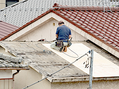
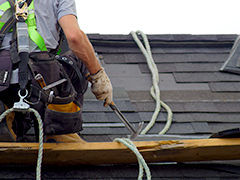

大阪府エリアでNo.1の
顧客対応評価
屋根のプロ集団です
「東大阪瓦産業株式会社」は、大阪を中心に雨漏り修理や屋根工事を行う会社です。このたび、大阪府エリアにおける「顧客満足度の高い屋根工事会社」No.1を受賞しました。このページでは、当社が“No.1”に輝いた理由や、雨漏り修理・屋根工事を行ううえでつねに心がけていることなどを紹介します。お客様の暮らしを支える工事を、当社がどのように行っているかご覧ください。
アンケートモニター提供元：ゼネラルリサーチ
調査期間：2021年5月21日～22日
調査方法：インターネット調査
調査概要：大阪府エリアの屋根工事会社10社を
対象にしたサイト比較イメージ調査
調査対象：全国の４0代～60代の
屋根工事経験のある男女 1007名
「東大阪瓦産業株式会社」が
No.1に輝いた理由とは？
01
ご相談・お見積もりは無料！
お客様に寄り添った価格設定
私達「東大阪瓦産業株式会社」は、お客様のお気持ちに寄り添う会社です。雨漏りなど大切なお住まいの一大事に、施工のプロとして対応します。屋根診断技士によるご相談・お見積もりは無料。使用する屋根材や施工法についても、お客様のご要望に添えるよう、これまで培ってきたあらゆる知識を活かします。そのため、当社ではお客様のご予算に応じた工事内容をご提案することが可能です。また、当社ではお客様が不安にならないよう、わかりやすく見積もりを説明いたします。ご不明な点がありましたら、何でもご相談ください。
雨漏りなどお住まいのトラブルは、相
談・見積り無料の東大阪瓦産業 へ
お問い合わせはこちら
02
創業40年、過去12万件の
現場で培った“経験値”

ひと口に「屋根工事」「雨漏り修理」と言っても、求められる対応は屋根の状況によって異なります。実際の工事では、家屋ごとに異なる屋根の形状、雨漏りの状況・原因などをしっかりと見極めることが重要だからです。では、そのために必要なものは何でしょうか？ それは、職人の“経験値”です。
「東大阪瓦産業株式会社」は創業以来40年、地域の皆様をはじめ多くの方から依頼を承ってきました。12万件にもおよぶ施工実績を積むことができたのは、お客様からの厚い信頼があったからこそだと、日々感謝しております。
この40年で、当社は多くの現場を経験し、家屋を取り巻く状況や流行、屋根材・施工法の進化を見続けてきました。こうして経験値を増やしてきたプロの雨漏り修理・屋根工事会社だからこそ「わかること」「できること」はたくさんあります。お客様に支えられ培ってきた経験値を、お客様の生活を支えるために活かしていきたい――。それが当社の願いです。
雨漏り修理・屋根工事は、経験値豊富な
職人が在籍する東大阪瓦産業へ
お問い合わせはこちら
03
経験豊富な職人・資格取得者 が
雨漏りの原因を特定

「東大阪瓦産業株式会社」は、「一般社団法人 全国日本瓦工事連盟」に加盟している雨漏り修理・屋根工事会社です。「瓦屋根工事技士」や「瓦屋根診断技士」も在籍し、屋根のスペシャリストがお客様の大切なお住まいの屋根を点検・修理・メンテナンスいたします。その際、屋根の状態・ご予算に応じて適切なプランを提示いたしますので、安心してご相談ください。
雨漏りは、原因を特定することが難しいトラブルです。しかし、いかにして原因を突き止め対策を講じるかが、雨漏り改善の“鍵”とも言われています。当社には数多くの雨漏り工事を手がけてきた経験値の高い職人が多数在籍しているので、雨漏りの原因を正確に特定。雨漏りを改善するだけではなく、「再発しない雨漏り修理」のための工事も行います。
雨漏りなどお住まいのトラブルは、相
談・見積り無料の東大阪瓦産業 へ
お問い合わせはこちら
04
ご近所への挨拶まわりや工事後の
アフターフォローも徹底！
突然の雨漏りや屋根の老朽化を受け、屋根の修理・メンテナンスを検討している方は多いでしょう。しかし、大がかりな工事をするとなると「ご近所に迷惑をかけるかも……」と不安になる方もいるのでは？
「東大阪瓦産業株式会社」では、工事の際はご近所に挨拶まわりを行い、近隣の皆様への配慮を徹底。ご近所様は、工事が終わってもお客様とのお付き合いが続く大切な方々です。そのため当社も、お客様と同じ気持ちで近隣の方に接し、工事中はできる限りご迷惑にならないよう配慮いたします。
また、当社のサービスは屋根修理をして“おしまい”ではありません。スピード感のあるアフターフォローと保証――。それが、当社の基本サポートです。新築工事は10年、リフォームは5年の保証を基本とし、工事終了後もお客様の快適な暮らしをサポートいたします。
雨漏り修理・屋根工事なら
アフターフォローも万全の東大阪瓦産業へ
お問い合わせはこちら
東大阪瓦産業の施工実績をブログで
「東大阪瓦産業株式会社」では、創業以来40年、12万件にもおよぶ現場で雨漏り修理・屋根工事を行ってきました。こちらのブログでは、そんな当社の施工実績を皆様にご紹介します。
当社には、経験豊富な職人のほかに、「瓦屋根工事技士」や「瓦屋根診断技士」などの資格取得者が在籍。これまで培ってきた経験から、お客様のさまざまなご要望に応えられます。そんな当社でどんな雨漏り修理・屋根工事ができるのか――。ブログで施工実績を紹介しているので、実際の工事をイメージする参考にしてください。「急に雨漏りがしてきた！」「屋根の老朽化が心配……」など、屋根のことでお困りならぜひ当社にご相談を！
どんな雨漏り修理・屋根工事ができるの？
お問い合わせはこちら